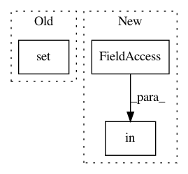

9e0ec5d4b358404c7dd833847f267ea46e32d054,tests/experimental_tests/links_tests/model_tests/fcis_tests/test_fcis_resnet101.py,TestFCISResNet101Pretrained,test_pretrained,#TestFCISResNet101Pretrained#,91
Before Change
}
if self.pretrained_model == "sbd":
valid = self.n_fg_class in {None, 20}
if valid:
FCISResNet101(**kwargs)
else:
After Change
valid = self.n_fg_class in [None, 20]
valid = valid and self.anchor_scales == (8, 16, 32)
elif self.pretrained_model.startswith("coco"):
valid = self.n_fg_class in [None, 80]
valid = valid and self.anchor_scales == (4, 8, 16, 32)
if valid:
FCISResNet101(**kwargs)
In pattern: SUPERPATTERN
Frequency: 3
Non-data size: 3
Instances
Project Name: chainer/chainercv
Commit Name: 9e0ec5d4b358404c7dd833847f267ea46e32d054
Time: 2019-01-31
Author: shingogo@hotmail.co.jp
File Name: tests/experimental_tests/links_tests/model_tests/fcis_tests/test_fcis_resnet101.py
Class Name: TestFCISResNet101Pretrained
Method Name: test_pretrained
Project Name: ray-project/ray
Commit Name: 30c22921d95bb66b6400c52fb19d640cbd0ee3e9
Time: 2020-12-28
Author: simon.mo@hey.com
File Name: python/ray/serve/router.py
Class Name: Router
Method Name: _update_traffic_policies
Project Name: hanxiao/bert-as-service
Commit Name: 0d72c46389804de2bbecdaf4e01fec1a223084cb
Time: 2019-01-18
Author: hanhxiao@tencent.com
File Name: server/bert_serving/server/graph.py
Class Name:
Method Name: convert_variables_to_constants